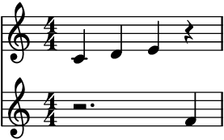
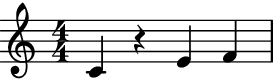
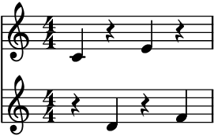
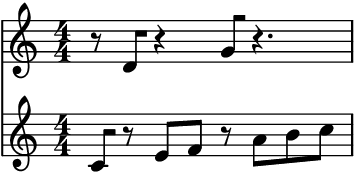
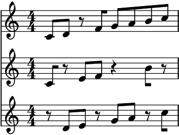
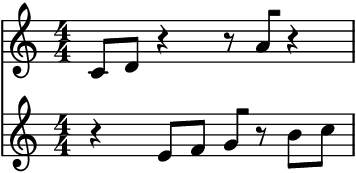
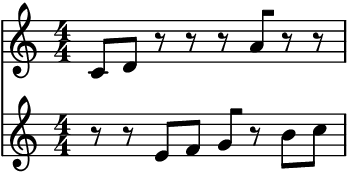
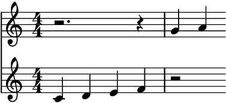
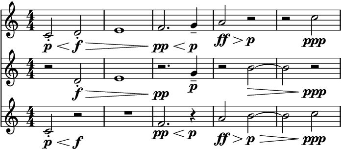

Hocketer¶
- class auxjad.Hocketer(contents: abjad.score.Container, *, n_voices: int = 2, pitch_ranges: Optional[list] = None, weights: Optional[list] = None, k: int = 1, force_k_voices: bool = False, explode_chords: bool = False, disable_rewrite_meter: bool = False, use_multimeasure_rests: bool = True, omit_time_signatures: bool = False, boundary_depth: Optional[int] = None, maximum_dot_count: Optional[int] = None, rewrite_tuplets: bool = True, prettify_rewrite_meter: bool = True, extract_trivial_tuplets: bool = True, fuse_across_groups_of_beats: bool = True, fuse_quadruple_meter: bool = True, fuse_triple_meter: bool = True)[source]¶
A hocket generator that takes an
abjad.Container(or child class) as input and randomly distributes its logical ties among different staves.- Basic usage:
Calling the object will return a
tupleofabjad.Selectiongenerated by the hocket process and ready to be assigned to anabjad.Score. Each call will generate a new random hocket from the input container.>>> container = abjad.Container(r"c'4 d'4 e'4 f'4") >>> abjad.show(container)

>>> hocketer = auxjad.Hocketer(container) >>> music = hocketer() >>> score = abjad.Score() >>> for selection in music: ... score.append(abjad.Staff(selection)) >>> abjad.show(score)
>>> music = hocketer() >>> score = abjad.Score() >>> for selection in music: ... score.append(abjad.Staff(selection)) >>> abjad.show(score)
- Indexing:
Alternatively, it is possible to retrieve an
abjad.Selectionfor each individual voice generated by the process by indexing or slicing the the object itself. In the case below, the hocket process is invoked in the third line, and the individual selections are retrieved in the loop.>>> container = abjad.Container(r"c'4 d'4 e'4 f'4") >>> hocketer = auxjad.Hocketer(container, n_voices=5, k=3) >>> hocketer() >>> score = abjad.Score() >>> for selection in hocketer[:]: ... staff = abjad.Staff(selection) ... score.append(staff) >>> abjad.show(score)
Individual staves can also be retrieved as shown below.
>>> staff = abjad.Staff(hocketer[0]) >>> abjad.show(staff)
>>> partial_score = abjad.Score() >>> for selection in hocketer[1:4]: ... staff = abjad.Staff(selection) ... partial_score.append(selection) >>> abjad.show(partial_score)
current_window:To get the result of the last operation, use the property
current_window.>>> container = abjad.Container(r"c'4 d'4 e'4 f'4") >>> hocketer = auxjad.Hocketer(container) >>> music = hocketer() >>> score = abjad.Score() >>> for selection in music: ... score.append(abjad.Staff(selection)) >>> abjad.show(score)
>>> music = hocketer.current_window >>> score = abjad.Score() >>> for selection in music: ... score.append(abjad.Staff(selection)) >>> abjad.show(score)

- Arguments and properties:
This class has many keyword arguments, all of which can be altered after instantiation using properties with the same names as shown below.
weightsset the individual weight of a given voice (must be alistof length equal ton_voices).kdefines the number of times that the process is applied to each logical tie. Settingforce_k_voicestoTrueensure that a single logical tie is distributed to exactlykvoices. Settingexplode_chordstoTruewill distribute individual pitches from chords into unique voices.pitch_rangesdefines the pitch range of each voice; it takes a list ofabjad.PitchRange’s.disable_rewrite_meterdisables theabjad.Meter.rewrite_meter()mutation which is applied to the container after every call. Any measure filled with rests will be rewritten using a multi-measure rest; set theuse_multimeasure_reststoFalseto disable this behaviour. The propertiesboundary_depth,maximum_dot_count, andrewrite_tupletsare passed as arguments toabjad.Meter.rewrite_meter(), see its documentation for more information. Setting the propertyomit_time_signaturestoTruewill remove all time signatures from the output (Falseby default).>>> container = abjad.Container(r"\time 3/4 c'4 d'4 e'4 | f'4 g'4 a'4") >>> hocketer = auxjad.Hocketer(container, ... n_voices=3, ... weights=[1, 2, 5], ... k=2, ... force_k_voices=True, ... explode_chords=True, ... pitch_ranges=[ ... abjad.PitchRange("[C4, D6]"), ... abjad.PitchRange("[C2, A4]"), ... abjad.PitchRange("[C1, E3]"), ... ], ... disable_rewrite_meter=True, ... use_multimeasure_rests=False, ... omit_time_signatures=True, ... boundary_depth=0, ... maximum_dot_count=1, ... rewrite_tuplets=False, ... ) >>> hocketer.n_voices 3 >>> hocketer.weights [1, 2, 5] >>> hocketer.k 2 >>> hocketer.force_k_voices True >>> hocketer.explode_chords True >>> hocketer.pitch_ranges [PitchRange('[C4, D6]'), PitchRange('[C2, A4]'), PitchRange('[C1, E3]')] >>> hocketer.disable_rewrite_meter True >>> not hocketer.use_multimeasure_rests False >>> hocketer.omit_time_signatures True >>> hocketer.boundary_depth 0 >>> hocketer.maximum_dot_count 1 >>> hocketer.rewrite_tuplets False
Use the properties below to change these values after initialisation.
>>> hocketer.n_voices = 5 >>> hocketer.weights = [1, 1, 1, 2, 7] >>> hocketer.k = 3 >>> hocketer.force_k_voices = False >>> hocketer.explode_chords = False >>> hocketer.pitch_ranges = None >>> hocketer.disable_rewrite_meter = False >>> hocketer.use_multimeasure_rests = True >>> hocketer.omit_time_signatures = False >>> hocketer.boundary_depth = 1 >>> hocketer.maximum_dot_count = 2 >>> hocketer.rewrite_tuplets = True >>> hocketer.n_voices 5 >>> hocketer.weights [1, 1, 1, 2, 7] >>> hocketer.k 3 >>> not hocketer.force_k_voices False >>> hocketer.explode_chords False >>> hocketer.pitch_ranges None >>> not hocketer.disable_rewrite_meter False >>> hocketer.use_multimeasure_rests True >>> hocketer.omit_time_signatures False >>> hocketer.boundary_depth 1 >>> hocketer.maximum_dot_count 2 >>> hocketer.rewrite_tuplets True
n_voices:Use the optional argument
n_voicesto set the number of different staves in the output (default is 2).>>> container = abjad.Container(r"c'8 d'8 e'8 f'8 g'8 a'8 b'8 c''8") >>> hocketer = auxjad.Hocketer(container, n_voices=3) >>> music = hocketer() >>> score = abjad.Score() >>> for selection in music: ... score.append(abjad.Staff(selection)) >>> abjad.show(score)
len():Applying the
len()function to the hocketer will return the current number of voices to be output by the hocketer.>>> container = abjad.Container(r"c'4 d'4 e'4 f'4 ~ | f'2 g'2") >>> hocketer = auxjad.Hocketer(container, n_voices=7) >>> len(hocketer) 6
pitch_ranges:The property
pitch_rangesdefines the pitch range of each voice. It takes a list ofabjad.PitchRange’s.>>> container = abjad.Container(r"c' d' e f' g a' b' c''") >>> hocketer = auxjad.Hocketer(container, ... n_voices=3, ... pitch_ranges=[ ... abjad.PitchRange("[C4, C5]"), ... abjad.PitchRange("[C4, C5]"), ... abjad.PitchRange("[C3, B3]"), ... ], ... ) >>> music = hocketer() >>> score = abjad.Score() >>> for selection in music: ... score.append(abjad.Staff(selection)) >>> abjad.attach(abjad.Clef('bass'), abjad.select(score[2]).leaf(0)) >>> abjad.show(score)

Note that changing
n_voiceswill resetpitch_ranges:>>> container = abjad.Container( ... r"\time 3/4 c'4 d'4 e'4 \time 2/4 f'4 g'4" ... ) >>> hocketer = auxjad.Hocketer(container, ... n_voices=3, ... pitch_ranges=[ ... abjad.PitchRange("[C4, D6]"), ... abjad.PitchRange("[C2, A4]"), ... abjad.PitchRange("[C1, E3]"), ... ], ... ) >>> hocketer.pitch_ranges [PitchRange("[C4, D6]"), PitchRange("[C2, A4]"), PitchRange("[C1, E3]")] ] >>> hocketer.n_voices = 4 >>> hocketer.pitch_ranges None
weights:Set
weightsto alistof numbers (eitherfloatorint) to give different weights to each voice. By default, all voices have equal weight. Thelistinweightsmust have the same length as the number of voices. In the example below,weightsis alistof length2(matching the default two voices). The second voice has a higher weight to it, and receives more notes from the hocket process as expected.>>> container = abjad.Container(r"c'8 d'8 e'8 f'8 g'8 a'8 b'8 c''8") >>> hocketer = auxjad.Hocketer(container, ... weights=[2.1, 5.7], ... ) >>> music = hocketer() >>> score = abjad.Score() >>> for selection in music: ... score.append(abjad.Staff(selection)) >>> abjad.show(score)
Use the method
reset_weights()to reset the weights back to their default values.>>> container = abjad.Container(r"c'8 d'8 e'8 f'8 g'8 a'8 b'8 c''8") >>> hocketer = auxjad.Hocketer(container, ... weights=[2.1, 5.7], ... ) >>> hocketer.weights [2.1, 5.7] >>> hocketer.reset_weights() >>> hocketer.weights [1.0, 1.0]
k:The argument
kis anintdefining the number of times that the process is applied to each logical tie. By default,kis set to1, so each logical tie is assigned to a single voice. Changing this to a higher value will increase the chance of a logical tie appearing for up tokdifferent voices.>>> container = abjad.Container(r"c'4 d'4 e'4 f'4") >>> hocketer = auxjad.Hocketer(container, n_voices=4, k=2) >>> music = hocketer() >>> score = abjad.Score() >>> for selection in music: ... score.append(abjad.Staff(selection)) >>> abjad.show(score)
force_k_voices:It is important to note that changing
kto a higher value does not guarantee each logical tie will appear inkdifferent voices. By default,konly defines how many times each logical tie is processed by the hocket process, which may select the same voice more than once. To ensure that each logical tie appears inkunique voices, set the optional keyword argumentforce_k_voicestoTrueas shown below.>>> container = abjad.Container(r"c'8 d'8 e'8 f'8 g'8 a'8 b'8 c''8") >>> hocketer = auxjad.Hocketer(container, ... n_voices=3, ... k=2, ... force_k_voices=True, ... ) >>> music = hocketer() >>> score = abjad.Score() >>> for selection in music: ... score.append(abjad.Staff(selection)) >>> abjad.show(score)

Error
Setting
force_k_voicestoTruewhenkis larger thann_voiceswill raise aValueErrorexception:>>> container = abjad.Container(r"c'8 d'8 e'8 f'8 g'8 a'8 b'8 c''8") >>> hocketer = auxjad.Hocketer(container, n_voices=4, k=5) >>> hocketer.force_k_voices = True ValueError: 'force_k_voices' cannot be set to True if 'k' > 'n_voices', change 'k' first
explode_chords:If
explode_chordsis set toTrue, chords will not be considered as a single leaf to be distributed but rather as a collection of individual pitches, which are then distributed among the voices. Compare:>>> container = abjad.Container( ... r"<c' e' g'>4 <d' f' a'>4 <e' g' b'>4 <f' a' c'>4" ... ) >>> hocketer = auxjad.Hocketer(container, ... n_voices=3, ... ) >>> music = hocketer() >>> score = abjad.Score() >>> for selection in music: ... score.append(abjad.Staff(selection)) >>> abjad.show(score)
>>> container = abjad.Container( ... r"<c' e' g'>4 <d' f' a'>4 <e' g' b'>4 <f' a' c'>4" ... ) >>> hocketer = auxjad.Hocketer(container, ... n_voices=3, ... explode_chords=True, ... ) >>> music = hocketer() >>> score = abjad.Score() >>> for selection in music: ... score.append(abjad.Staff(selection)) >>> abjad.show(score)
Note
It is very important to note that
explode_chordsdoes not takeweightsnorkin consideration. It does, however, takepitch_rangesinto account:>>> container = abjad.Container( ... r"<c' e' g'>4 <d' f' a'>4 <e' g' b'>4 <f' a' c'>4" ... ) >>> hocketer = auxjad.Hocketer(container, ... n_voices=3, ... explode_chords=True, ... pitch_ranges=[ ... abjad.PitchRange("[E4, C5]"), ... abjad.PitchRange("[E4, C5]"), ... abjad.PitchRange("[C4, F4]"), ... ], ... ) >>> music = hocketer() >>> score = abjad.Score() >>> for selection in music: ... score.append(abjad.Staff(selection)) >>> abjad.show(score)
Warning
When setting
explode_chordstoTrue, ifn_voicesis less than the number of pitches in a chord then only the firstn_voices-pitches will be considered in the distribution.disable_rewrite_meter:By default, this class uses the
abjad.Meter.rewrite_meter()mutation, which is necessary for cleaning up the rests.>>> container = abjad.Container(r"c'8 d'8 e'8 f'8 g'8 a'8 b'8 c''8") >>> hocketer = auxjad.Hocketer(container) >>> music = hocketer() >>> score = abjad.Score() >>> for selection in music: ... score.append(abjad.Staff(selection)) >>> abjad.show(score)
Set
disable_rewrite_metertoTruein order to disable this behaviour.>>> container = abjad.Container(r"c'8 d'8 e'8 f'8 g'8 a'8 b'8 c''8") >>> hocketer = auxjad.Hocketer(container, ... disable_rewrite_meter=True, ... ) >>> music = hocketer() >>> score = abjad.Score() >>> for selection in music: ... score.append(abjad.Staff(selection)) >>> abjad.show(score)
use_multimeasure_rests:By default, this class rewrites all measures that are filled with rests, replacing the rests by a multi-measure rest.
>>> container = abjad.Container(r"\time 3/4 c'4 d'4 e'4 f'4 g'4 a'4") >>> hocketer = auxjad.Hocketer(container) >>> music = hocketer() >>> score = abjad.Score() >>> for selection in music: ... score.append(abjad.Staff(selection)) >>> abjad.show(score)
Set
use_multimeasure_reststoFalseto disable this behaviour.>>> container = abjad.Container(r"\time 3/4 c'4 d'4 e'4 f'4 g'4 a'4") >>> hocketer = auxjad.Hocketer(container, ... use_multimeasure_rests=False, ... ) >>> music = hocketer() >>> score = abjad.Score() >>> for selection in music: ... score.append(abjad.Staff(selection)) >>> abjad.show(score)
contents:Use the property
contentsto get the input container upon which the hocketer operates. Notice thatcontentsremains invariant after any shuffling or rotation operations (usecurrent_windowfor the transformed selection of music).contentscan be used to change theabjad.Containerto be shuffled.>>> container = abjad.Container(r"c'4 d'4 e'4 f'4") >>> hocketer = auxjad.Hocketer(container) >>> abjad.show(hocketer.contents)

>>> hocketer() >>> abjad.show(hocketer.contents)

>>> hocketer.contents = abjad.Container(r"cs2 ds2") >>> abjad.show(hocketer.contents)
- Tweaking
abjad.Meter.rewrite_meter(): This function uses the default logical tie splitting algorithm from
abjad.Meter.rewrite_meter().>>> container = abjad.Container(r"c'4. d'8 e'2") >>> hocketer = auxjad.Hocketer(container, ... n_voices=1, ... ) >>> music = hocketer() >>> score = abjad.Score() >>> for selection in music: ... score.append(abjad.Staff(selection)) >>> abjad.show(score)

Set
boundary_depthto a different number to change its behaviour.>>> hocketer = auxjad.Hocketer(container, ... n_voices=1, ... boundary_depth=1, ... ) >>> music = hocketer() >>> score = abjad.Score() >>> for selection in music: ... score.append(abjad.Staff(selection)) >>> abjad.show(staff)

Other arguments available for tweaking the output of
abjad.Meter.rewrite_meter()aremaximum_dot_countandrewrite_tuplets, which work exactly as the identically named arguments ofabjad.Meter.rewrite_meter().This class also accepts the arguments
fuse_across_groups_of_beats,fuse_quadruple_meter,fuse_triple_meter, andextract_trivial_tuplets, which are passed on toauxjad.mutate.prettify_rewrite_meter()(the latter can be disabled by settingprettify_rewrite_metertoFalse). See the documentation of this function for more details on these arguments.- Time signature changes and nested tuplets:
This class can handle time signature changes as well as nested tuplets.
>>> container = abjad.Container( ... r"\time 5/4 r4 \times 2/3 {c'4 d'2} e'4. f'8 " ... r"\times 4/5 {\time 4/4 g'2. \times 2/3 {a'8 r8 b'2}}" ... ) >>> hocketer = auxjad.Hocketer(container, ... n_voices=4, ... k=2, ... ) >>> music = hocketer() >>> score = abjad.Score() >>> for selection in music: ... score.append(abjad.Staff(selection)) >>> abjad.show(score)
omit_time_signatures:To disable time signatures altogether, initialise this class with the keyword argument
omit_time_signaturesset toTrue(default isFalse), or use theomit_time_signaturesproperty after initialisation. It is recommended to also setuse_multimeasure_reststoFalse, as those are created according to the original time signatures.>>> container = abjad.Container(r"\time 3/4 c'4 d'4 e'4 f'4 g'4 a'4") >>> hocketer = auxjad.Hocketer(container, ... omit_time_signatures=True, ... use_multimeasure_rests=False, ... ) >>> music = hocketer() >>> score = abjad.Score() >>> for selection in music: ... score.append(abjad.Staff(selection)) >>> abjad.show(score)
- Indicators:
Dynamics and hairpins are supported.
>>> container = abjad.Container( ... r"c'2-.\p\< d'2-.\f\> e'1 f'2.\pp\< g'4--\p " ... r"a'2\ff\> b'2\p\> ~ b'2 c''2\ppp" ... ) >>> hocketer = auxjad.Hocketer(container, ... n_voices=3, ... k=2, ... force_k_voices=True, ... ) >>> music = hocketer() >>> score = abjad.Score() >>> for selection in music: ... score.append(abjad.Staff(selection)) >>> abjad.show(score)

Tip
The functions
auxjad.mutate.remove_repeated_dynamics()andauxjad.mutate.reposition_clefs()can be used to clean the output and remove repeated dynamics and unnecessary clef changes.Warning
Do note that some elements that span multiple notes (such as ottava indicators, manual beams, etc.) can become problematic when notes containing them are split into two. As a rule of thumb, it is always better to attach those to the music after the fading process has ended.
Methods
__call__()Calls the hocket process, returning a
tupleofabjad.Selection.__getitem__(key)Returns one or more voices of the output of the hocketer through indexing or slicing.
__init__(contents, *[, n_voices, …])Initialises self.
__len__()Returns the number of voices of the hocketer.
__repr__()Returns interpreter representation of
contents.Resets the weight vector of all voices to an uniform distribution.
Attributes
Sets the argument
boundary_depthofabjad.Meter.rewrite_meter().The
abjad.Containerto be hocketed.Read-only property, returns the result of the last operation as a
tupleofabjad.Selection..When
True, the durations of the notes in the output will not be rewritten by theabjad.Meter.rewrite_meter()mutation.When
True, the hocket process will consider each note of a chord individually, ‘exploding’ it into several voices.Sets the argument
extract_trivial_tupletsofauxjad.mutate.prettify_rewrite_meter().When
True, the hocket process will ensure that each logical tie is distributed amongkvoices.Sets the argument
fuse_across_groups_of_beatsofauxjad.mutate.prettify_rewrite_meter().Sets the argument
fuse_quadruple_meterofauxjad.mutate.prettify_rewrite_meter().Sets the argument
fuse_triple_meterofauxjad.mutate.prettify_rewrite_meter().Number of random choice operations applied to a logical tie.
Sets the argument
maximum_dot_countofabjad.Meter.rewrite_meter().Number of individual voices in the output.
When
True, all time signatures will be omitted from the output.List of tuples or lists for the pitch ranges of each voice.
Used to enable or disable the mutation
auxjad.mutate.prettify_rewrite_meter()(defaultTrue).Sets the argument
rewrite_tupletsofabjad.Meter.rewrite_meter().When
True, multi-measure rests will be used for silent measures.The
listwith weights for each voice.- __getitem__(key: int) → abjad.select.Selection[source]¶
Returns one or more voices of the output of the hocketer through indexing or slicing.
- __init__(contents: abjad.score.Container, *, n_voices: int = 2, pitch_ranges: Optional[list] = None, weights: Optional[list] = None, k: int = 1, force_k_voices: bool = False, explode_chords: bool = False, disable_rewrite_meter: bool = False, use_multimeasure_rests: bool = True, omit_time_signatures: bool = False, boundary_depth: Optional[int] = None, maximum_dot_count: Optional[int] = None, rewrite_tuplets: bool = True, prettify_rewrite_meter: bool = True, extract_trivial_tuplets: bool = True, fuse_across_groups_of_beats: bool = True, fuse_quadruple_meter: bool = True, fuse_triple_meter: bool = True) → None[source]¶
Initialises self.
- property boundary_depth: Optional[int]¶
Sets the argument
boundary_depthofabjad.Meter.rewrite_meter().
- property contents: abjad.score.Container¶
The
abjad.Containerto be hocketed.
- property current_window: Optional[tuple]¶
Read-only property, returns the result of the last operation as a
tupleofabjad.Selection..
- property disable_rewrite_meter: bool¶
When
True, the durations of the notes in the output will not be rewritten by theabjad.Meter.rewrite_meter()mutation. Rests will have the same duration as the logical ties they replaced.
- property explode_chords: bool¶
When
True, the hocket process will consider each note of a chord individually, ‘exploding’ it into several voices.
- property extract_trivial_tuplets: bool¶
Sets the argument
extract_trivial_tupletsofauxjad.mutate.prettify_rewrite_meter().
- property force_k_voices: bool¶
When
True, the hocket process will ensure that each logical tie is distributed amongkvoices.
- property fuse_across_groups_of_beats: bool¶
Sets the argument
fuse_across_groups_of_beatsofauxjad.mutate.prettify_rewrite_meter().
- property fuse_quadruple_meter: bool¶
Sets the argument
fuse_quadruple_meterofauxjad.mutate.prettify_rewrite_meter().
- property fuse_triple_meter: bool¶
Sets the argument
fuse_triple_meterofauxjad.mutate.prettify_rewrite_meter().
- property k: int¶
Number of random choice operations applied to a logical tie.
- property maximum_dot_count: Optional[int]¶
Sets the argument
maximum_dot_countofabjad.Meter.rewrite_meter().
- property n_voices: int¶
Number of individual voices in the output.
- property omit_time_signatures: bool¶
When
True, all time signatures will be omitted from the output.
- property pitch_ranges: list¶
List of tuples or lists for the pitch ranges of each voice. Use the format:
[(min0, max0), (min1, max1), (min2, max2), …]
… where the indices are the voice numbers.
- property prettify_rewrite_meter: bool¶
Used to enable or disable the mutation
auxjad.mutate.prettify_rewrite_meter()(defaultTrue).
- property rewrite_tuplets: bool¶
Sets the argument
rewrite_tupletsofabjad.Meter.rewrite_meter().
- property use_multimeasure_rests: bool¶
When
True, multi-measure rests will be used for silent measures.